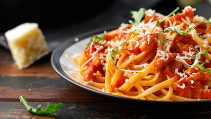

-
Home
-
Foods
- Continental
- Chinese
- Italian
- Indian
-
Contact
-
About us
Welcome to my Food Webpage :)
Here you will find the best food in the world, We have Continental, chinese, Italian and Indian cuisines.
A style of cooking that includes the better-known dishes of various western European countries.
These eight culinary cuisines are Anhui, Cantonese, Fujian, Hunan, Jiangsu, Shandong, Szechuan and Zhejiang.
Italian cuisine is a Mediterranean cuisine consisting of the ingredients, recipes and cooking techniques developed across the Italian Peninsula and later spread around the world together with waves of Italian diaspora.
Indian cuisine consists of a variety of regional and traditional cuisines native to India. Given the diversity in soil, climate, culture, ethnic groups, and occupations, these cuisines vary substantially and use locally available spices, herbs, vegetables, and fruits.

We Provide the Best food in the world, serve you many types of foods like Continental, Chinese, Italian and Indian Food.
We have the best chefs to provide the best taste and quality you ever wonder.
Thank you for visiting :)